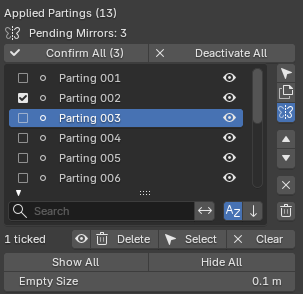

Parting List¶
Applies to: Parting Placer V2.0.0 · Blender 4.4 · 5.2
Every parting you place shows up in this list. From here you pick, hide, copy, mirror, reorder and remove them.

Applied Partings¶
The heading counts your partings, for example Applied Partings (2). New partings are named Parting 001, Parting 002 and so on.
Pending Mirrors¶
A mirror starts out pending, so you can see it before you keep it. While any are pending, a line under the heading counts them, for example Pending Mirrors: 2.
With more than five pending, a warning appears: Confirm or deactivate pending mirrors.
Confirm All¶
Keeps every pending mirror as a parting of its own. The button shows how many, for example Confirm All (2). The README calls it Confirm All Pending.
Deactivate All¶
Throws away every pending mirror. The README calls it Deactivate All Pending.
Blender asks you to confirm first.
Tick Box¶
Tick the box beside a parting's name to pick it for the ticked-row buttons. Tick as many as you like, in any order. Shift-click a second box to tick every row between the two.
Eye (One Parting)¶
The eye at the end of a row hides that parting, or shows it again. Hiding a parting also hides its pending mirror, if it has one.
A hidden parting stays hidden when you switch styles and back. See Style.
Search And Sort Row¶
The row under the list is always open. Type in Search to show only partings whose name contains your text.
The sort buttons switch between your stack order and A to Z, and flip the order.
Select¶
The arrow beside the list selects the active parting's Empty in the viewport, so you can move it.
Duplicate¶
Makes a copy of the active parting, along with its own Empty.
The copy carries the whole warp, lattice included, and sits on the head the same way as its source.
Mirror¶
Makes a pending mirror of the active parting on the other side of the head. The status bar says Pending mirror created.
While the parting has a pending mirror, the button stays pressed in. Select it again to choose Confirm (make permanent) or Deactivate (destroy mirror).
For the full workflow, see Mirror Partings.
Mirrors carry the whole warp. A linked mirror follows lattice edits on its source while you drag. See Edit Warp.
Up And Down¶
Moves the active parting up or down the stack. Up is greyed out on the top row, and Down on the bottom row.
Moving A Parting Into The Top Row
A move that puts a different parting in the top row strips the head's skin texture. The head turns a flat tan. Press Ctrl+Z straight away to bring it back. Repair Partings does not fix it.
Where two partings overlap, the one lower in the list is drawn on top. Moving a parting changes which one shows.
X (Remove)¶
Removes the active parting and its Empty.
Trash (Delete All)¶
The trash can under X removes every parting on the head. It keeps the material you have been tuning, so the next parting you place carries your settings over.
The status bar reports what went, ending with Material kept.
To put the head's plain skin material back as well, use Reset Partings instead.
Blender asks first, for example Delete all 3 parting(s)? with Delete All and Cancel.
Fix Duplicate Names¶
If two partings end up with the same name, a red button appears, for example Fix 2 Duplicate Name(s). Select it to give each one its own name.
Eye (Ticked Row)¶
Once you tick a parting, a row appears above Show All / Hide All. It starts with a count, for example 2 ticked.
Its eye hides the ticked partings, or shows them again. If some are hidden and some showing, it hides all of them. The icon always shows what the next press will do.
Delete¶
Removes every ticked parting.
Select¶
Selects the ticked partings' Empties in the viewport, so you can move them together. Hidden partings are skipped, and the status bar says how many.
Clear¶
Unticks everything.
Show All / Hide All¶
Shows or hides every parting on the head at once.
Empty Size¶
The slider under Show All / Hide All. It sets how big every parting's Empty draws in the viewport. The default is 0.15.
Its tooltip reads: Display size of every parting Empty in the active style. Blender multiplies it by each Empty's scale, so bigger partings draw bigger axes
Dragging it resizes the Empties of every parting in the active style, including any you sized by hand. Partings in parked styles keep their size.
New partings are placed at the slider's size.
The slider does not read sizes back from your Empties. It shows its own value until you drag it.
If You're Stuck
- A parting has gone missing? See I Cannot See Any Partings.
- Can't find the mirror button? See I Cannot See The Mirror Toggle In The Sidebar.
- Anything else: Still Stuck.
Recommended next: Appearance